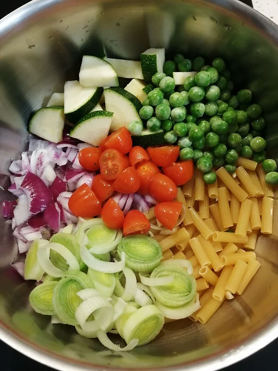

Instant Pot Pasta
Tempo de preparação
10min
Horas de Cozimento
15min
Tempo Total
25min
Porções
4/5

Ingredientes
- massa de tubos riscada q.b
- 1 cebola roxa picada
- 2 alhos picados
- 1 alho francês cortado às rodelas
- ½ courgette cortada aos quartos
- ½ copo de ervilhas congeladas
- 10 tomates cherry cortados ao meio
- 1 molho de espinafres lavados e escorridos
- sal q.b
- pimenta preta q.b
- pimentão doce q.b
- piri piri em flocos q.b
- orégãos q.b
- polpa de tomate q.b
- 1 folha de loureiro
Instruções
- Numa panela coloque todos os ingredientes em frio: a massa, a cebola roxa, os alhos, o alho francês, a courgette, as ervilhas, os tomates cherry, o sal, a pimenta preta, o pimentão doce, o piri piri, os orégãos, a polpa de tomate, a folha de loureiro e encha com água até tapar tudo.
- Leve ao lume e quando a massa estiver quase cozida junte os espinafres. Depois de tudo cozinhado, é só devorar!